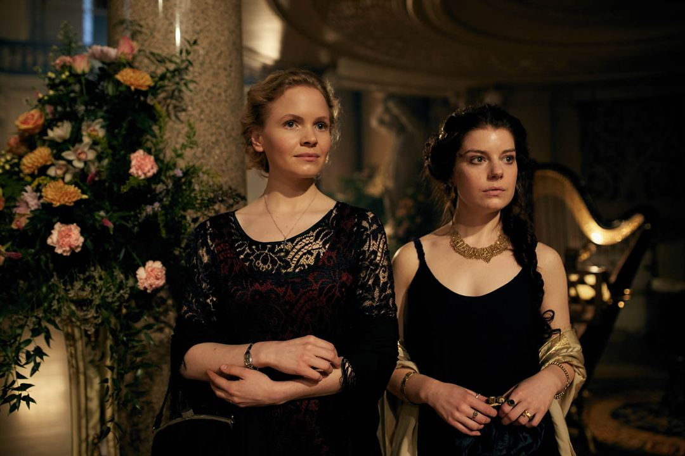

Cillian Murphy
Tommy Shelby
 cillian Murphy es un actor, actor de voz, músico y productor irlandés. Comenzó a mostrar interés por la música desde temprana edad y con 10 años ya había compuesto varias canciones. Tras culminar la secundaria, fundó con su hermano la banda The Sons of Mr.
cillian Murphy es un actor, actor de voz, músico y productor irlandés. Comenzó a mostrar interés por la música desde temprana edad y con 10 años ya había compuesto varias canciones. Tras culminar la secundaria, fundó con su hermano la banda The Sons of Mr.
Helen McCrory
Polly Gray
Helen Elizabeth McCrory fue una actriz británica ganadora del premio BAFTA, reconocida por su interpretación de Polly Gray en la exitosa serie Peaky Blinders, Narcissa Malfoy en la saga de películas Harry Potter y Cherie Blair en la película The Queen, además de su aparición en la serie televisiva North Square.
Paul Anderson
Arthur Shelby
Paul Anderson es un actor británico de cine y televisión.Es conocido por interpretar a Arthur Shelby en la serie del canal BBC Peaky Blinders. Anderson comenzó su carrera como actor apareciendo en obras escritas por su amigo Gregory Burke. Su primer papel protagónico en una película fue en The Firm
Tom Hardy
Alfie Solomons
 Edward Thomas Hardy, más conocido como Tom Hardy, es un actor y productor cinematográfico británico.Hardy es un actor de método que ejecuta trasformaciones tanto físicas como vocales para adaptarse a cada papel.
Edward Thomas Hardy, más conocido como Tom Hardy, es un actor y productor cinematográfico británico.Hardy es un actor de método que ejecuta trasformaciones tanto físicas como vocales para adaptarse a cada papel.
Sophie Rundle
Ada Shelby
Sophie Rundle es una actriz inglesa, conocida por haber interpretado a Ada Shelby en la serie Peaky Blinders y a Kirsten McAskill en la serie Happy Valley.
Joe Cole
John Shelby
Joseph Michael Cole, más conocido como Joe Cole, es un actor inglés. Es conocido por su rol como Luke en la serie Skins, John Shelby en Peaky Blinders y Sean Wallace en Gangs of London.
Harry Kirton
Finn Shelby
Harry Kirton ha interpretado a Finn Shelby en el programa desde la serie dos, asumiendo el papel de Alfie Evans-Meese, quien interpretó el papel en la primera temporada.
Kate Phillips
Linda Shelby
Kate Phillips es una actriz británica reconocida por sus roles en las series Peaky Blinders, Wolf Hall y The Alienist.
Aimee-Ffion Edwards
Esme Shelby
Aimee-Ffion Edwards es una actriz galesa, más conocida por su personaje de Sketch en la serie británica Skins.
Charlie Creed-Miles
Billy Kimber
Charlie Creed-Miles es un actor y músico británico.Creed-Miles nació en Nottingham, y tuvo su primer papel protagónico, con 19, en The Punk. Su relación con la actriz Samantha Morton produjo una hija, nacida en 2000.